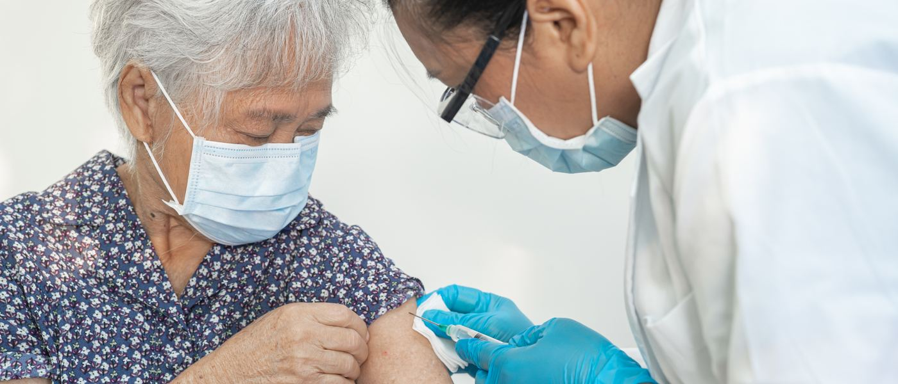

The national residency in Preventive Medicine.
- 60 months Full-time, to specialist accreditation
- Fully sponsored MPH NUS Saw Swee Hock School of Public Health
- 10 rotation sites Across eight ministries, agencies and clusters
- 2 exit pathways Public Health, or Occupational Medicine
- 24 residents Currently in training
Singapore has one training pathway to specialist registration in Public Health and Occupational Medicine. This is it.

Source: Programme Office records, 2011–2026 intakes. Verified [date] by [named person, email]. Underlying figures available on request. Every figure on this site is published with its denominator; where a figure is not released, this page says so rather than omitting the row.
Applications for the July 2027 intake
Applications are made through the MOH Holdings eResidency portal. Interview registration with the Sponsoring Institution is a separate, earlier step — that is the deadline people miss.
Interview registration closes 30 September 2026.
eResidency portal closes 20 November 2026.
Apply for the July 2027 intake Interview registration closes 30 September 2026
Not ready to apply? Write to A/Prof Jason Yap, Programme Director, at jasonyap@nus.edu.sg.
What this costs you
The Master of Public Health is fully sponsored. A sponsorship is an obligation, so here is the obligation in full.
- Programme fee sponsored
- S$48,000 — the full cost of the part-time Master of Public Health at NUS Saw Swee Hock School of Public Health, including examination fees.
- Who pays
- The Sponsoring Institution, through MOH Holdings.
- Additional service obligation
- Two years, served after specialist accreditation.
- Against an existing bond
- Runs consecutively to an existing MOH or PSC bond, not concurrently. Your total obligation is the sum of the two.
- If you leave early
- Liquidated damages are pro-rated against the unserved portion of the obligation. Leaving during residency ends the sponsorship from that date; fees already paid are not recovered.
Where our residents train, and where graduates work
Ten rotation sites across eight organisations — ministries, statutory boards and all three healthcare clusters. No other residency in Singapore rotates this widely.
- Ministry of HealthNational health policy, financing and regulation
- Health Promotion BoardPopulation health programmes and behavioural intervention
- Ministry of ManpowerOccupational safety, health and workplace exposure standards
- Ministry of Home AffairsHealth services across the Home Team
- Singapore Armed ForcesMilitary and occupational medicine
- National Healthcare GroupPopulation health at cluster scale
- SingHealthPopulation health at cluster scale
- National University Health SystemAcademic health system and Sponsoring Institution
Participating institutions as published by NUHS. Confirm which ten sites sit across these eight organisations.
Dear colleague,
With the challenges facing Singapore, Preventive Medicine physicians are needed as never before. Singapore faces a convergence of an ageing population, increasing chronic disease, escalating healthcare costs and a maelstrom of healthcare reforms at macro, meso and micro levels. These are bread-and-butter issues for the Preventive Medicine practitioner.
If you are weighing this against a hospital specialty, weigh it honestly. You will spend most of your five years outside a ward, your work will rarely have a face attached to it, and the results arrive years after the decision. In exchange you get reach that clinical practice cannot offer, and problems that do not resolve at discharge.
We would rather you came to that decision with the full picture. Everything on this site is published with its denominator, including the figures that are not flattering.
Opening paragraph quoted from an interview with the Singapore Medical Association, 2018.
Ask someone who is doing it
Writing to a Programme Director from a work account puts your name on documented interest in leaving your department. So that is not the only door here.
Information session
14 October 2026, 6.30pm
NUHS Tower Block, Singapore
Register to attend
Ask a current resident
Two residents take questions from prospective applicants, without the Programme Office copied in.
Names and contact
Programme Director
A/Prof Jason Yap
jasonyap@nus.edu.sg
Programme Office
Ms Fanny Yik and Ms Reena Riana
Contact details
We reply within five working days. If you have not heard back, write again — it means we missed it.